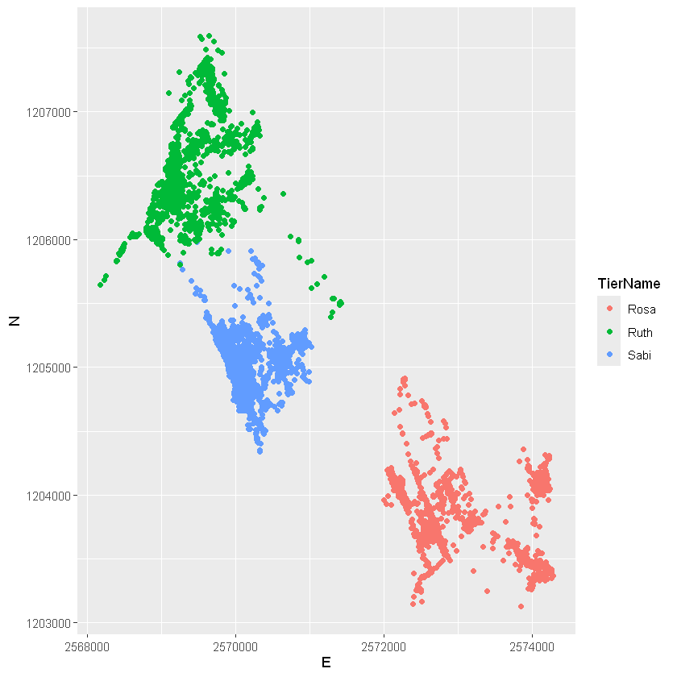
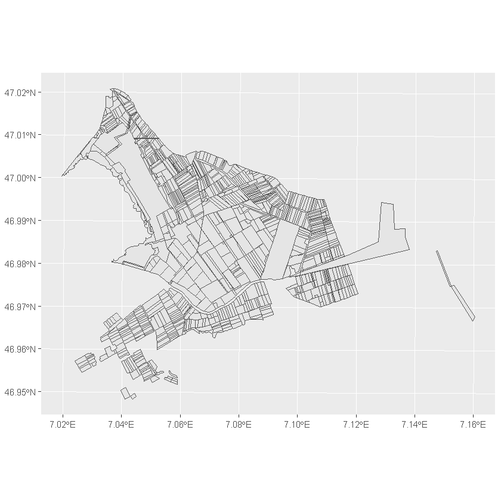
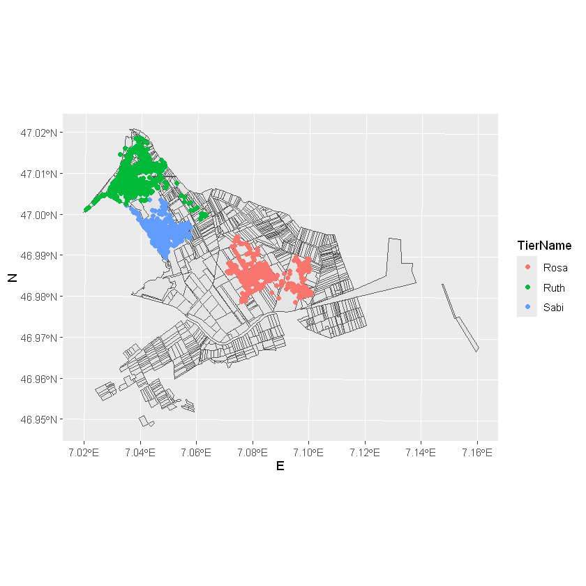
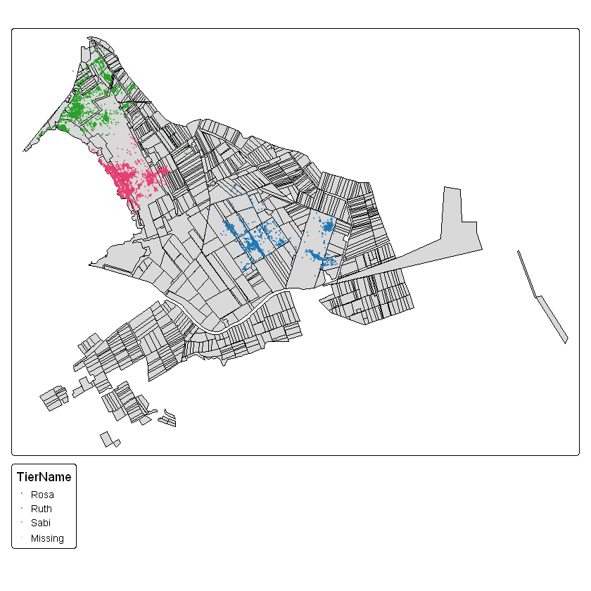
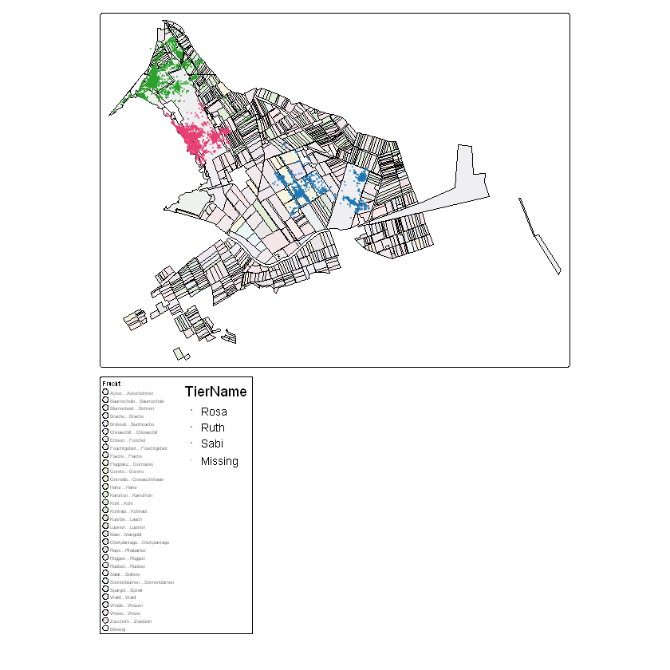
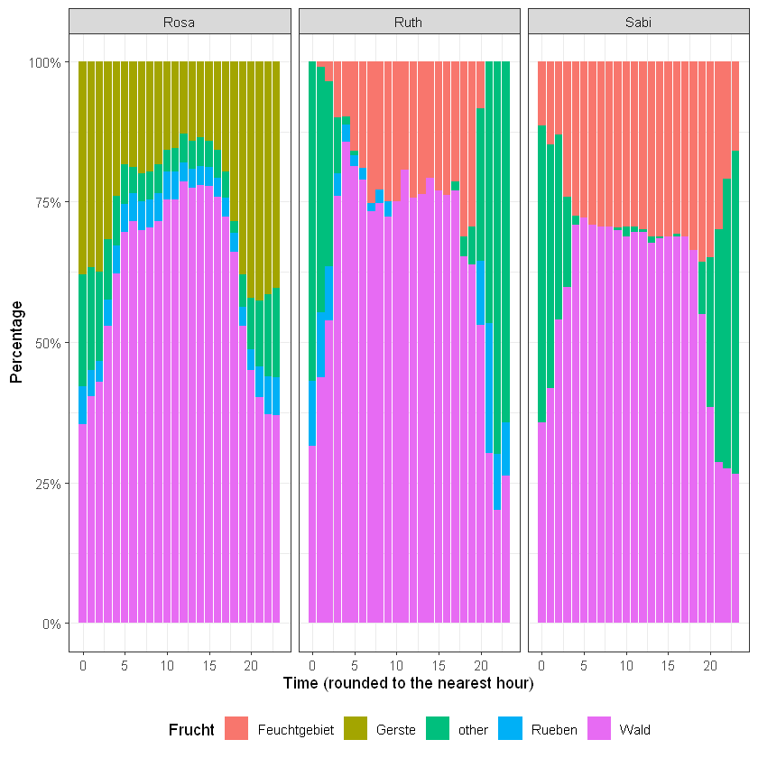
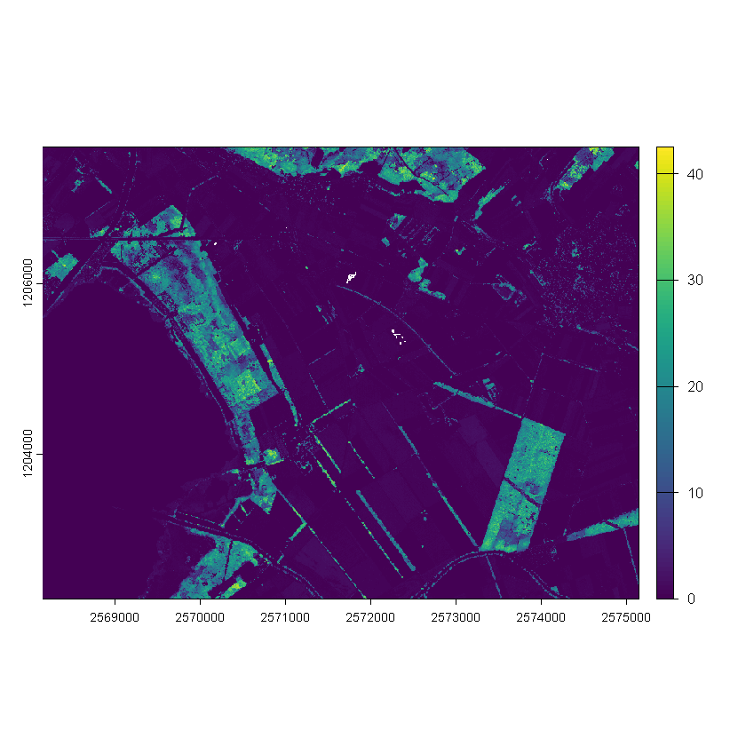
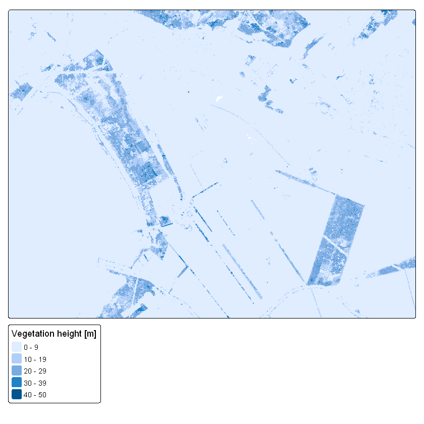
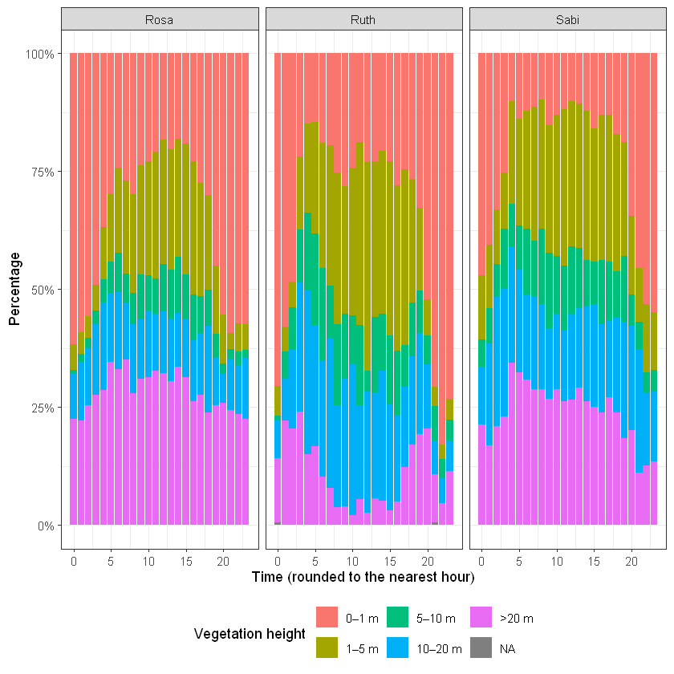

Code
library("tidyverse")
library("sf")
wildschwein <- read_delim("Data/wildschwein_BE_2056.csv", ",") %>%
st_as_sf(coords = c("E", "N"), crs = 2056, remove = FALSE)Import your wild boar dataset wildschwein_BE_2056.csv (on moodle) as an sf object
library("tidyverse")
library("sf")
wildschwein <- read_delim("Data/wildschwein_BE_2056.csv", ",") %>%
st_as_sf(coords = c("E", "N"), crs = 2056, remove = FALSE)head(wildschwein)
st_crs(wildschwein)| TierID | TierName | CollarID | DatetimeUTC | E | N | geometry |
|---|---|---|---|---|---|---|
| <chr> | <chr> | <dbl> | <dttm> | <dbl> | <dbl> | <POINT [m]> |
| 002A | Sabi | 12275 | 2014-08-22 21:00:12 | 2570409 | 1204752 | POINT (2570409 1204752) |
| 002A | Sabi | 12275 | 2014-08-22 21:15:16 | 2570402 | 1204863 | POINT (2570402 1204863) |
| 002A | Sabi | 12275 | 2014-08-22 21:30:43 | 2570394 | 1204826 | POINT (2570394 1204826) |
| 002A | Sabi | 12275 | 2014-08-22 21:46:07 | 2570379 | 1204817 | POINT (2570379 1204817) |
| 002A | Sabi | 12275 | 2014-08-22 22:00:22 | 2570390 | 1204818 | POINT (2570390 1204818) |
| 002A | Sabi | 12275 | 2014-08-22 22:15:10 | 2570390 | 1204825 | POINT (2570390 1204825) |
Coordinate Reference System:
User input: EPSG:2056
wkt:
PROJCRS["CH1903+ / LV95",
BASEGEOGCRS["CH1903+",
DATUM["CH1903+",
ELLIPSOID["Bessel 1841",6377397.155,299.1528128,
LENGTHUNIT["metre",1]]],
PRIMEM["Greenwich",0,
ANGLEUNIT["degree",0.0174532925199433]],
ID["EPSG",4150]],
CONVERSION["Swiss Oblique Mercator 1995",
METHOD["Hotine Oblique Mercator (variant B)",
ID["EPSG",9815]],
PARAMETER["Latitude of projection centre",46.9524055555556,
ANGLEUNIT["degree",0.0174532925199433],
ID["EPSG",8811]],
PARAMETER["Longitude of projection centre",7.43958333333333,
ANGLEUNIT["degree",0.0174532925199433],
ID["EPSG",8812]],
PARAMETER["Azimuth at projection centre",90,
ANGLEUNIT["degree",0.0174532925199433],
ID["EPSG",8813]],
PARAMETER["Angle from Rectified to Skew Grid",90,
ANGLEUNIT["degree",0.0174532925199433],
ID["EPSG",8814]],
PARAMETER["Scale factor at projection centre",1,
SCALEUNIT["unity",1],
ID["EPSG",8815]],
PARAMETER["Easting at projection centre",2600000,
LENGTHUNIT["metre",1],
ID["EPSG",8816]],
PARAMETER["Northing at projection centre",1200000,
LENGTHUNIT["metre",1],
ID["EPSG",8817]]],
CS[Cartesian,2],
AXIS["(E)",east,
ORDER[1],
LENGTHUNIT["metre",1]],
AXIS["(N)",north,
ORDER[2],
LENGTHUNIT["metre",1]],
USAGE[
SCOPE["Cadastre, engineering survey, topographic mapping (large and medium scale)."],
AREA["Liechtenstein; Switzerland."],
BBOX[45.82,5.96,47.81,10.49]],
ID["EPSG",2056]]Download the dataset Feldaufnahmen_Fanel.gpkg (on moodle) and save it to your project folder. This is a vector dataset stored in the filetype Geopackage, which is similar to a Shapefile, with some advantages (see the website shapefile must die).
Also download the dataset vegetationshoehe_LFI.tif (on moodle) and store it in your project folder. This is a raster dataset stored in a Geotiff.
Since Feldaufnahmen_Fanel.gpkg is a vector dataset, you can import it using read_sf(). Explore this dataset in R to answer the following questions:
feldaufnahmen <- read_sf("Data/Feldaufnahmen_Fanel.gpkg")
head(feldaufnahmen)
st_crs(feldaufnahmen)| FieldID | Frucht | geom |
|---|---|---|
| <dbl> | <chr> | <POLYGON [m]> |
| 1 | Roggen | POLYGON ((2570914 1202743, ... |
| 0 | NA | POLYGON ((2570893 1202758, ... |
| 0 | NA | POLYGON ((2570868 1202776, ... |
| 2 | Wiese | POLYGON ((2570882 1203234, ... |
| 3 | Weide | POLYGON ((2570249 1203116, ... |
| 5 | Weide | POLYGON ((2570378 1203320, ... |
Coordinate Reference System:
User input: CH1903+ / LV95
wkt:
PROJCRS["CH1903+ / LV95",
BASEGEOGCRS["CH1903+",
DATUM["CH1903+",
ELLIPSOID["Bessel 1841",6377397.155,299.1528128,
LENGTHUNIT["metre",1]]],
PRIMEM["Greenwich",0,
ANGLEUNIT["degree",0.0174532925199433]],
ID["EPSG",4150]],
CONVERSION["Swiss Oblique Mercator 1995",
METHOD["Hotine Oblique Mercator (variant B)",
ID["EPSG",9815]],
PARAMETER["Latitude of projection centre",46.9524055555556,
ANGLEUNIT["degree",0.0174532925199433],
ID["EPSG",8811]],
PARAMETER["Longitude of projection centre",7.43958333333333,
ANGLEUNIT["degree",0.0174532925199433],
ID["EPSG",8812]],
PARAMETER["Azimuth at projection centre",90,
ANGLEUNIT["degree",0.0174532925199433],
ID["EPSG",8813]],
PARAMETER["Angle from Rectified to Skew Grid",90,
ANGLEUNIT["degree",0.0174532925199433],
ID["EPSG",8814]],
PARAMETER["Scale factor at projection centre",1,
SCALEUNIT["unity",1],
ID["EPSG",8815]],
PARAMETER["Easting at projection centre",2600000,
LENGTHUNIT["metre",1],
ID["EPSG",8816]],
PARAMETER["Northing at projection centre",1200000,
LENGTHUNIT["metre",1],
ID["EPSG",8817]]],
CS[Cartesian,2],
AXIS["(E)",east,
ORDER[1],
LENGTHUNIT["metre",1]],
AXIS["(N)",north,
ORDER[2],
LENGTHUNIT["metre",1]],
USAGE[
SCOPE["Cadastre, engineering survey, topographic mapping (large and medium scale)."],
AREA["Liechtenstein; Switzerland."],
BBOX[45.82,5.96,47.81,10.49]],
ID["EPSG",2056]]What information does the dataset contain?
What is the geometry type of the dataset (possible types are: Point, Lines and Polygons)? –> Polygon
What are the data types of the other columns?
What is the coordinate system of the dataset? –> CH1903+ / LV95
We would like to know what crop was visited by which wild boar, and at what time. Since the crop data is most relevant in summer, filter your wild boar data to the months may to june first and save the output to a new variable. Overlay the filtered dataset with your fanel data to verify the spatial overlap.
To sematically annotate each wild boar location with crop information, you can use a spatial join with the function st_join(). Do this and explore your annotated dataset.
head(wildschwein)| TierID | TierName | CollarID | DatetimeUTC | E | N | geometry |
|---|---|---|---|---|---|---|
| <chr> | <chr> | <dbl> | <dttm> | <dbl> | <dbl> | <POINT [m]> |
| 002A | Sabi | 12275 | 2014-08-22 21:00:12 | 2570409 | 1204752 | POINT (2570409 1204752) |
| 002A | Sabi | 12275 | 2014-08-22 21:15:16 | 2570402 | 1204863 | POINT (2570402 1204863) |
| 002A | Sabi | 12275 | 2014-08-22 21:30:43 | 2570394 | 1204826 | POINT (2570394 1204826) |
| 002A | Sabi | 12275 | 2014-08-22 21:46:07 | 2570379 | 1204817 | POINT (2570379 1204817) |
| 002A | Sabi | 12275 | 2014-08-22 22:00:22 | 2570390 | 1204818 | POINT (2570390 1204818) |
| 002A | Sabi | 12275 | 2014-08-22 22:15:10 | 2570390 | 1204825 | POINT (2570390 1204825) |
wildschwein_summer <- wildschwein %>%
filter(month(DatetimeUTC) == 5 | month(DatetimeUTC) == 6)head(wildschwein_summer)
min(wildschwein_summer$DatetimeUTC)
max(wildschwein_summer$DatetimeUTC)| TierID | TierName | CollarID | DatetimeUTC | E | N | geometry |
|---|---|---|---|---|---|---|
| <chr> | <chr> | <dbl> | <dttm> | <dbl> | <dbl> | <POINT [m]> |
| 002A | Sabi | 12275 | 2015-05-01 00:00:17 | 2570093 | 1205256 | POINT (2570093 1205256) |
| 002A | Sabi | 12275 | 2015-05-01 00:15:25 | 2570093 | 1205249 | POINT (2570093 1205249) |
| 002A | Sabi | 12275 | 2015-05-01 00:30:15 | 2570091 | 1205253 | POINT (2570091 1205253) |
| 002A | Sabi | 12275 | 2015-05-01 00:45:15 | 2570059 | 1205242 | POINT (2570059 1205242) |
| 002A | Sabi | 12275 | 2015-05-01 01:00:30 | 2570078 | 1205246 | POINT (2570078 1205246) |
| 002A | Sabi | 12275 | 2015-05-01 01:15:43 | 2570096 | 1205256 | POINT (2570096 1205256) |
[1] "2015-05-01 00:00:07 UTC"[1] "2015-06-30 23:45:16 UTC"ggplot(wildschwein_summer, aes(E, N, colour = TierName)) +
geom_point()
ggplot(feldaufnahmen) +
geom_sf()
ggplot() +
geom_sf(data = feldaufnahmen) +
geom_point(
data = wildschwein_summer,
aes(x = E, y = N, colour = TierName)
)
library(tmap)
tm_shape(feldaufnahmen) +
tm_polygons(
col = NA,
border.col = "black"
) +
tm_shape(wildschwein_summer) +
tm_dots(
x = "E",
y = "N",
col = "TierName",
size = 0.05,
alpha = 0.6
)
head(wildschwein_summer)
head(feldaufnahmen)| TierID | TierName | CollarID | DatetimeUTC | E | N | geometry |
|---|---|---|---|---|---|---|
| <chr> | <chr> | <dbl> | <dttm> | <dbl> | <dbl> | <POINT [m]> |
| 002A | Sabi | 12275 | 2015-05-01 00:00:17 | 2570093 | 1205256 | POINT (2570093 1205256) |
| 002A | Sabi | 12275 | 2015-05-01 00:15:25 | 2570093 | 1205249 | POINT (2570093 1205249) |
| 002A | Sabi | 12275 | 2015-05-01 00:30:15 | 2570091 | 1205253 | POINT (2570091 1205253) |
| 002A | Sabi | 12275 | 2015-05-01 00:45:15 | 2570059 | 1205242 | POINT (2570059 1205242) |
| 002A | Sabi | 12275 | 2015-05-01 01:00:30 | 2570078 | 1205246 | POINT (2570078 1205246) |
| 002A | Sabi | 12275 | 2015-05-01 01:15:43 | 2570096 | 1205256 | POINT (2570096 1205256) |
| FieldID | Frucht | geom |
|---|---|---|
| <dbl> | <chr> | <POLYGON [m]> |
| 1 | Roggen | POLYGON ((2570914 1202743, ... |
| 0 | NA | POLYGON ((2570893 1202758, ... |
| 0 | NA | POLYGON ((2570868 1202776, ... |
| 2 | Wiese | POLYGON ((2570882 1203234, ... |
| 3 | Weide | POLYGON ((2570249 1203116, ... |
| 5 | Weide | POLYGON ((2570378 1203320, ... |
wildschwein_summer_join <- st_join(wildschwein_summer, feldaufnahmen)
head(wildschwein_summer_join)| TierID | TierName | CollarID | DatetimeUTC | E | N | geometry | FieldID | Frucht |
|---|---|---|---|---|---|---|---|---|
| <chr> | <chr> | <dbl> | <dttm> | <dbl> | <dbl> | <POINT [m]> | <dbl> | <chr> |
| 002A | Sabi | 12275 | 2015-05-01 00:00:17 | 2570093 | 1205256 | POINT (2570093 1205256) | 0 | Wald |
| 002A | Sabi | 12275 | 2015-05-01 00:15:25 | 2570093 | 1205249 | POINT (2570093 1205249) | 0 | Wald |
| 002A | Sabi | 12275 | 2015-05-01 00:30:15 | 2570091 | 1205253 | POINT (2570091 1205253) | 0 | Wald |
| 002A | Sabi | 12275 | 2015-05-01 00:45:15 | 2570059 | 1205242 | POINT (2570059 1205242) | 0 | Wald |
| 002A | Sabi | 12275 | 2015-05-01 01:00:30 | 2570078 | 1205246 | POINT (2570078 1205246) | 0 | Wald |
| 002A | Sabi | 12275 | 2015-05-01 01:15:43 | 2570096 | 1205256 | POINT (2570096 1205256) | 0 | Wald |
tm_shape(feldaufnahmen) +
tm_polygons(
col = "Frucht",
border.col = "black",
alpha = 0.2
) +
tm_shape(wildschwein_summer_join) +
tm_dots(
x = "E",
y = "N",
col = "TierName",
size = 0.05,
alpha = 0.6
)
tmap_mode("view")
m <- tm_shape(feldaufnahmen) +
tm_polygons(
col = "Frucht",
border.col = "black",
alpha = 0.2
) +
tm_shape(wildschwein_summer_join) +
tm_dots(
x = "E",
y = "N",
col = "TierName",
size = 0.05,
alpha = 0.6
)print(tmap_leaflet(m))
tmap_save(m, "Week_7_Karte.html")Think of ways you could visually explore the spatio-temporal patterns of wild boar in relation to the crops. In our example below we visualize the percentage of samples in a given crop per hour.
wildschwein_summer_join %>%
count(Frucht, sort = TRUE) %>%
slice_head(n = 6)| Frucht | n | geometry |
|---|---|---|
| <chr> | <int> | <MULTIPOINT [m]> |
| Wald | 9459 | MULTIPOINT ((2568949 120642... |
| Feuchtgebiet | 2201 | MULTIPOINT ((2568174 120564... |
| Gerste | 1479 | MULTIPOINT ((2572140 120464... |
| NA | 608 | MULTIPOINT ((2569055 120656... |
| Rueben | 445 | MULTIPOINT ((2569633 120710... |
| Bohnen | 329 | MULTIPOINT ((2569388 120727... |
Für die Visualisierung verwende ich Wald, Feuchtgebiet, Gerste, Rueben und eine Klasse für alle anderen other.
wildschwein_summer_join <- wildschwein_summer_join %>%
mutate(Frucht_reclass = case_when(
Frucht %in% c("Wald", "Feuchtgebiet", "Gerste", "Rueben") ~ Frucht,
TRUE ~ "other"))unique(wildschwein_summer_join$Frucht_reclass)#head(wildschwein_summer_join)df <- wildschwein_summer_join %>%
mutate(hour = hour(DatetimeUTC))head(df)| TierID | TierName | CollarID | DatetimeUTC | E | N | geometry | FieldID | Frucht | Frucht_reclass | hour |
|---|---|---|---|---|---|---|---|---|---|---|
| <chr> | <chr> | <dbl> | <dttm> | <dbl> | <dbl> | <POINT [m]> | <dbl> | <chr> | <chr> | <int> |
| 002A | Sabi | 12275 | 2015-05-01 00:00:17 | 2570093 | 1205256 | POINT (2570093 1205256) | 0 | Wald | Wald | 0 |
| 002A | Sabi | 12275 | 2015-05-01 00:15:25 | 2570093 | 1205249 | POINT (2570093 1205249) | 0 | Wald | Wald | 0 |
| 002A | Sabi | 12275 | 2015-05-01 00:30:15 | 2570091 | 1205253 | POINT (2570091 1205253) | 0 | Wald | Wald | 0 |
| 002A | Sabi | 12275 | 2015-05-01 00:45:15 | 2570059 | 1205242 | POINT (2570059 1205242) | 0 | Wald | Wald | 0 |
| 002A | Sabi | 12275 | 2015-05-01 01:00:30 | 2570078 | 1205246 | POINT (2570078 1205246) | 0 | Wald | Wald | 1 |
| 002A | Sabi | 12275 | 2015-05-01 01:15:43 | 2570096 | 1205256 | POINT (2570096 1205256) | 0 | Wald | Wald | 1 |
ggplot(df, aes(x = hour, fill = Frucht_reclass)) +
geom_bar(position = "fill") +
facet_wrap(~TierName) +
scale_y_continuous(labels = scales::percent) +
labs(x = "Time (rounded to the nearest hour)", y = "Percentage", fill = "Frucht") +
theme_bw() +
theme(legend.position = "bottom")
In terms of raster data, we have prepared the Vegetation Height Model provided by the Swiss National Forest Inventory (NFI). This dataset contains high resolution information (1x1 Meter) on the vegetation height, which is determined from the difference between the digital surface models DSM and the digital terrain model by swisstopo (swissAlti3D). Buildings are eliminated using a combination of the ground areas of the swisstopo topographic landscape model (TLM) and spectral information from the stereo aerial photos.
Import this dataset using the function rast from the package terra. Visualize the raster data using the base plot function and tmap. We do not recommend using ggplot2 in this case, as is very slow with raster data.
library("terra")raster <- rast("Data/vegetationshoehe_LFI.tif")
rasterclass : SpatRaster
size : 5303, 7001, 1 (nrow, ncol, nlyr)
resolution : 1, 1 (x, y)
extent : 2568153, 2575154, 1202306, 1207609 (xmin, xmax, ymin, ymax)
coord. ref. : +proj=somerc +lat_0=46.9524055555556 +lon_0=7.43958333333333 +k_0=1 +x_0=2600000 +y_0=1200000 +ellps=bessel +units=m +no_defs
source : vegetationshoehe_LFI.tif
name : vegetationshoehe_LFI
min value : 0.00
max value : 47.58 plot(raster)
tmap_mode("plot")
tm_shape(raster) +
tm_raster(
title = "Vegetation height [m]"
) 
Semantically annotate your wild boar locations with the vegetation index (similar as you did with the crop data in Task 2). Since you are annotating a vector dataset with information from a raster dataset, you cannot use st_join but need the function extract from the terra package. Read the help on the extract function to see what the function expects here.
You can now explore the spatio-temporal patterns of this new data, similarly to as we did in Task 3.
head(df)| TierID | TierName | CollarID | DatetimeUTC | E | N | geometry | FieldID | Frucht | Frucht_reclass | hour |
|---|---|---|---|---|---|---|---|---|---|---|
| <chr> | <chr> | <dbl> | <dttm> | <dbl> | <dbl> | <POINT [m]> | <dbl> | <chr> | <chr> | <int> |
| 002A | Sabi | 12275 | 2015-05-01 00:00:17 | 2570093 | 1205256 | POINT (2570093 1205256) | 0 | Wald | Wald | 0 |
| 002A | Sabi | 12275 | 2015-05-01 00:15:25 | 2570093 | 1205249 | POINT (2570093 1205249) | 0 | Wald | Wald | 0 |
| 002A | Sabi | 12275 | 2015-05-01 00:30:15 | 2570091 | 1205253 | POINT (2570091 1205253) | 0 | Wald | Wald | 0 |
| 002A | Sabi | 12275 | 2015-05-01 00:45:15 | 2570059 | 1205242 | POINT (2570059 1205242) | 0 | Wald | Wald | 0 |
| 002A | Sabi | 12275 | 2015-05-01 01:00:30 | 2570078 | 1205246 | POINT (2570078 1205246) | 0 | Wald | Wald | 1 |
| 002A | Sabi | 12275 | 2015-05-01 01:15:43 | 2570096 | 1205256 | POINT (2570096 1205256) | 0 | Wald | Wald | 1 |
veg_height_points <- terra::extract(raster, vect(df))
#--- take a look ---#
head(veg_height_points)| ID | vegetationshoehe_LFI | |
|---|---|---|
| <dbl> | <dbl> | |
| 1 | 1 | 8.74 |
| 2 | 2 | 20.62 |
| 3 | 3 | 11.06 |
| 4 | 4 | 26.15 |
| 5 | 5 | 17.48 |
| 6 | 6 | 13.17 |
nrow(df) == nrow(veg_height_points)df_veg_height <- df %>%
mutate(
vegetationshoehe_LFI = veg_height_points$vegetationshoehe_LFI)head(df_veg_height)| TierID | TierName | CollarID | DatetimeUTC | E | N | geometry | FieldID | Frucht | Frucht_reclass | hour | vegetationshoehe_LFI |
|---|---|---|---|---|---|---|---|---|---|---|---|
| <chr> | <chr> | <dbl> | <dttm> | <dbl> | <dbl> | <POINT [m]> | <dbl> | <chr> | <chr> | <int> | <dbl> |
| 002A | Sabi | 12275 | 2015-05-01 00:00:17 | 2570093 | 1205256 | POINT (2570093 1205256) | 0 | Wald | Wald | 0 | 8.74 |
| 002A | Sabi | 12275 | 2015-05-01 00:15:25 | 2570093 | 1205249 | POINT (2570093 1205249) | 0 | Wald | Wald | 0 | 20.62 |
| 002A | Sabi | 12275 | 2015-05-01 00:30:15 | 2570091 | 1205253 | POINT (2570091 1205253) | 0 | Wald | Wald | 0 | 11.06 |
| 002A | Sabi | 12275 | 2015-05-01 00:45:15 | 2570059 | 1205242 | POINT (2570059 1205242) | 0 | Wald | Wald | 0 | 26.15 |
| 002A | Sabi | 12275 | 2015-05-01 01:00:30 | 2570078 | 1205246 | POINT (2570078 1205246) | 0 | Wald | Wald | 1 | 17.48 |
| 002A | Sabi | 12275 | 2015-05-01 01:15:43 | 2570096 | 1205256 | POINT (2570096 1205256) | 0 | Wald | Wald | 1 | 13.17 |
summary(df_veg_height$vegetationshoehe_LFI) Min. 1st Qu. Median Mean 3rd Qu. Max. NA's
0.000 0.780 4.560 9.362 18.690 36.380 2 df_veg_height <- df_veg_height %>%
mutate(
veg_height_class = case_when(
vegetationshoehe_LFI < 1 ~ "0–1 m",
vegetationshoehe_LFI < 5 ~ "1–5 m",
vegetationshoehe_LFI < 10 ~ "5–10 m",
vegetationshoehe_LFI < 20 ~ "10–20 m",
vegetationshoehe_LFI >= 20 ~ ">20 m" ))df_veg_height <- df_veg_height %>%
mutate(
veg_height_class = factor(
veg_height_class,
levels = c("0–1 m", "1–5 m", "5–10 m", "10–20 m", ">20 m")
)
)head(df_veg_height)| TierID | TierName | CollarID | DatetimeUTC | E | N | geometry | FieldID | Frucht | Frucht_reclass | hour | vegetationshoehe_LFI | veg_height_class |
|---|---|---|---|---|---|---|---|---|---|---|---|---|
| <chr> | <chr> | <dbl> | <dttm> | <dbl> | <dbl> | <POINT [m]> | <dbl> | <chr> | <chr> | <int> | <dbl> | <fct> |
| 002A | Sabi | 12275 | 2015-05-01 00:00:17 | 2570093 | 1205256 | POINT (2570093 1205256) | 0 | Wald | Wald | 0 | 8.74 | 5–10 m |
| 002A | Sabi | 12275 | 2015-05-01 00:15:25 | 2570093 | 1205249 | POINT (2570093 1205249) | 0 | Wald | Wald | 0 | 20.62 | >20 m |
| 002A | Sabi | 12275 | 2015-05-01 00:30:15 | 2570091 | 1205253 | POINT (2570091 1205253) | 0 | Wald | Wald | 0 | 11.06 | 10–20 m |
| 002A | Sabi | 12275 | 2015-05-01 00:45:15 | 2570059 | 1205242 | POINT (2570059 1205242) | 0 | Wald | Wald | 0 | 26.15 | >20 m |
| 002A | Sabi | 12275 | 2015-05-01 01:00:30 | 2570078 | 1205246 | POINT (2570078 1205246) | 0 | Wald | Wald | 1 | 17.48 | 10–20 m |
| 002A | Sabi | 12275 | 2015-05-01 01:15:43 | 2570096 | 1205256 | POINT (2570096 1205256) | 0 | Wald | Wald | 1 | 13.17 | 10–20 m |
ggplot(df_veg_height, aes(x = hour, fill = veg_height_class)) +
geom_bar(position = "fill") +
facet_wrap(~TierName) +
scale_y_continuous(labels = scales::percent) +
labs(x = "Time (rounded to the nearest hour)", y = "Percentage", fill = "Vegetation height") +
theme_bw() +
theme(legend.position = "bottom")